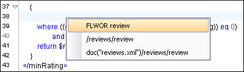
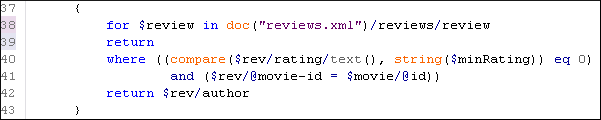

XQuery Input View
The structure of the source documents of an edited XQuery is displayed in a tree form in a view called the XQuery Input view. If the view is not displayed, it can be opened by selecting it from the menu. The tree nodes represent the elements of the documents.
You can use the XQuery Input view to drag and drop a node into the editing area to quickly insert XQuery expressions.
Example:
For the following XML
documents:
<movies>
<movie id="1">
<title>The Green Mile</title>
<year>1999</year>
</movie>
<movie id="2">
<title>Taxi Driver</title>
<year>1976</year>
</movie>
</movies>
<reviews>
<review id="100" movie-id="1">
<rating>5</rating>
<comment>It is made after a great Stephen King book.
</comment>
<author>Paul</author>
</review>
<review id="101" movie-id="1">
<rating>3</rating>
<comment>Tom Hanks does a really nice acting.</comment>
<author>Beatrice</author>
</review>
<review id="104" movie-id="2">
<rating>4</rating>
<comment>Robert De Niro is my favorite actor.</comment>
<author>Maria</author>
</review>
</reviews>and the following
XQuery:
let $review := doc("reviews.xml")
for $movie in doc("movies.xml")/movies/movie
let $movie-id := $movie/@id
return
<movie id="{$movie/@id}">
{$movie/title}
{$movie/year}
<maxRating>
{
}
</maxRating>
</movie>If you drag the review element and drop it between the braces, the following pop-up menu is displayed:

Select FLWOR review, the resulting document will look like this:
